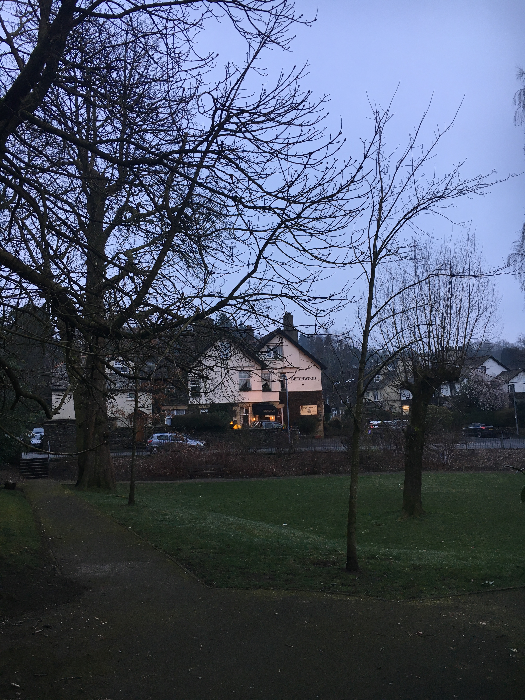

昨天终于有机会前往英国湖区参观，和两位好友（SC和YHX）一起去到了位于英格兰的温德米尔湖。
早上8点从曼彻斯特出发，搭乘两个小时的火车前往温德米尔小镇。这是一个景色绝美的小镇，尽管当天是阴天（英国的阴天～.～,真难得呢），但是依然可以感受到小镇上的惬意和悠闲。从火车站出来后，在附近的超市买了一些零食，我们就朝着目的地温德米尔湖出发了。全程徒步，大约30分钟横穿整个小镇。沿途可以看到很多有英国特色的house和其他建筑，大概是因为周五的原因，小镇上的游客并不多，因此很多餐厅并不开业。温德米尔不愧是彼得兔的故乡，走在路上，随处都能看到大大的彼得兔的宣传海报和玩具。SC和YHX没有忍住，没人买了一个玩偶，开心的合照。 到达温德米尔湖后，第一时间买了环湖的船票。趁着等待的时间，在周围观赏了海鸟，鸽子和天鹅。这里的海鸟都不怕人，见到有人走过，还会围过去。但是我曾听一位学长说过，在英国一定要远离天鹅，他的一位同学曾经不幸被天鹅的翅膀打到骨折。我们在湖边拍照时，本来挑选了一处没有海鸟的地方，但是这些鸟看到我们站在湖边，似乎以为我们会对他们喂食，纷纷朝着我们游来，不过片刻功夫，眼前的湖边竟然聚满了各式各样的鸟类。 上船之后，沿湖而行，湖上碧波荡漾，船上的讲解每看到一个房子都会进行讲解，这个是维多利亚时代的，这个是文艺复兴时期的。现在基本都已经改成了酒店，入住费用不菲。凡此种种，只能感叹，有钱人的生活，确实快乐。 45分钟的湖上游览时间，转瞬即逝，但是由于天冷，等到下船时，3人已经冷到浑身打颤，仓促拍了两张照片，赶紧钻到一家咖啡厅用热咖啡暖暖身子。 接下来的时间就是四处走走逛逛，但是因为旅游淡季，四处都在休整。只能随意观赏一下周围的建筑。随着夜色逐渐降临，感觉像是来到了日本的乡村。唯美的建筑，樱花和整洁安静的街道，都让人陶醉。 